Your FM-1, reborn as a live groovebox.
SLOOP is a free, open-source firmware that turns the pocket FM-1 into a four-track instrument you play with your hands: three synths and a drum machine, twelve synthesis engines, 153 sounds, 37 drum kits and a sequencer that records as you play. No patterns to load. Everything you hear, you play.
- 4tracks: 3 synths + drums
- 12synthesis engines
- 153level-matched sounds
- 37drum kits
- 27punch-in effects
- 64steps per track
Twice the room, and what you asked for.
SLOOP 2.7 runs on both of the FM-1's processor cores, so many voices and insert effects no longer crackle. With it come fifteen arp modes, tune and decay on every drum, favourite sounds, held chords, looping samples, recording with your own timing, a new MIDI page, your own screen colours, kicks you hear on any speaker and a LIVE page in the editor to play a whole show. Most of it comes from your comments, issues and tests.
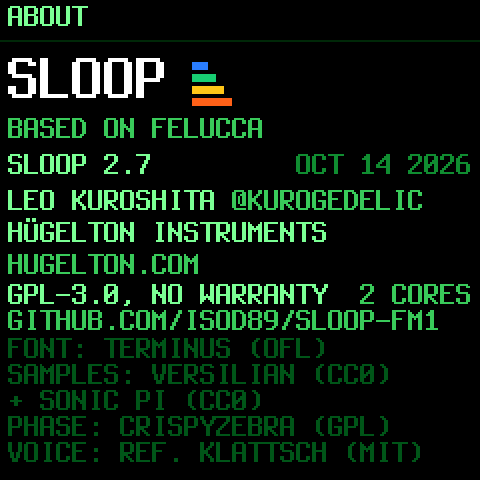
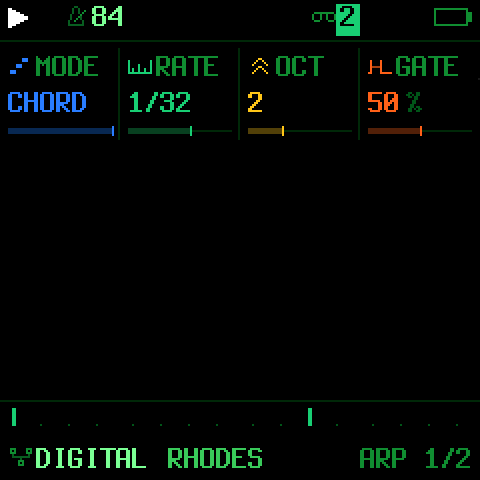
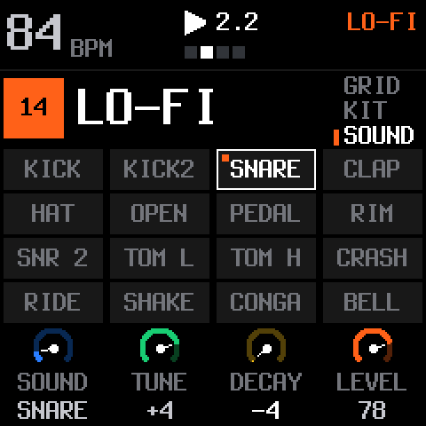
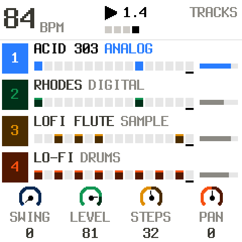
Two cores
The sound is computed on both of the FM-1's cores: about twice the room before the processor runs out. On by default; ABOUT says 2 CORES. Knobs also sweep wider when you turn fast, and LEVEL and PAN glide.
Fifteen arp modes
REPEAT, DNUP, UP+8, CONV, DIVG, PINKY, THUMB, WALK and CHORD, from Felucca 1.5.1. ORD plays in the order you pressed, and the arp keeps going when you change the sound.
Tune and decay every drum
A new SOUND page on the DRUMS screen: pick a pad, then tune it up or down and make it shorter or longer, on every kit. Each section keeps its own drum sound.
Samples that loop
LOOP while you hold the key, or LOOP+TAIL to play the end when you let go. Loop points snap to zero crossings, and a WAV's own loop is read.
Favourite sounds
KNOB 4 on the PRESETS page marks up to 16 sounds as favourites: they wait at the top of the list, so playing live means no more scrolling through 153 sounds.
MIDI 3
The punch-in effects from your pads or DAW, drums from any 16 notes, the 14 buttons over MIDI, and the FM-1 as the clock master on USB. CC 74 sweeps each engine's own filter.
Play it your way
KBD HOLD keeps a chord ringing with the arp off. QUANT off records exactly when you played, you can overdub over held notes, and ARP swing works with the sequencer stopped.
Your own colours
The editor's Theme page: five screen colours, a background (white too), an accent and the tracks' colours. Share a theme as one line of text.
Sections A–D
SAVE → SECTION: the four slots are the sections of your song, and now they say so. Keep as many songs as you like as editor backups.
Kicks you hear anywhere
The kicks of the synthesised kits (808, 909, 606, TRAP...) now have drive and a deeper pitch sweep: you hear them on the FM-1's speaker, a phone or earbuds, not just a click. Same note underneath.
A show from the editor
The LIVE page: eight scenes that morph over bars, chains of sections, roll and erase, echo throws, MIDI learn for your controller, and the whole set recorded as a WAV.
Drums in the editor
Pick the drum track on the editor's Sound page: the kit, level, pan, filter, sends and INSERT, and each pad's tune and decay. Tap a pad to hear it.
Hold a button. Touch a key.
Every function button is a layer: hold it and the 16 white keys and the four knobs change job, while the screen shows exactly what they do. Let go and you are back to playing. Hold a layer and tap HOME to lock it open, both hands free.
27 punch-in effects
Hold FX and press a key: the effect takes the whole mix for as long as you hold it, locked to the tempo. Loops from 1/4 to 1/32, stutter, reverse, tape stop, half speed, filter sweeps, bit crush, gate, echo and tape wobble on the white keys; DJ kills, rewind, octave up, flanger, auto-pan, freeze and fade out on the black keys.
The knobs are a master filter, DUST (an old sampler and a record), DUCK (the kick pumps the synths) and the selected track's own filter. FX + OCT− / OCT+ throws the reverb or the echo.
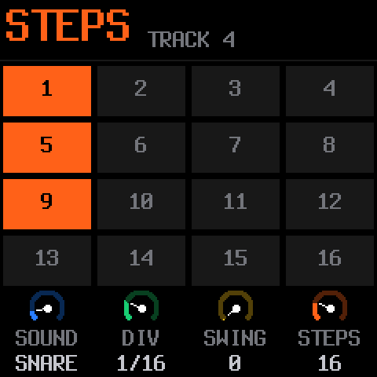
Steps under your fingers
Hold SEQ: the white keys are the 16 steps of the page. Tap to set or clear them, and the knobs set the sound or note, the division, the swing and the length (up to 64 steps).
Hold a step to give it a level, a ratchet, a nudge off the grid, its own value of any sound parameter (parameter locks) or a fill condition.
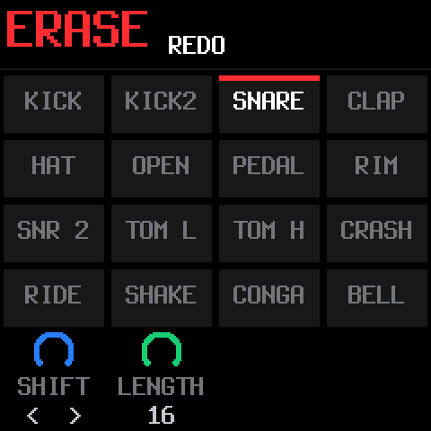
Erase as it plays, mute live
Hold EDIT and hold a key: that sound or note disappears from every step the playhead passes, the way an MPC erases. Stopped, it goes from the whole pattern.
On the drum track, a black key switches the keys to live mutes, and they stay mutes until you switch back: drop the hats, bring them back, nothing erased. EDIT + OCT− / OCT+ is undo and redo, and the knobs shift, double or halve and transpose the pattern.
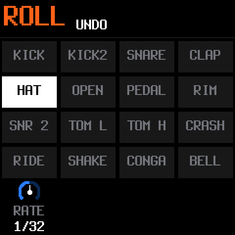
Rolls on the grid
Hold ARP and hold a key: it repeats on the grid at the rate you pick, from 1/8 to 1/64, locked to the tempo and the swing. Recording, a roll becomes ratchets on the steps.
Tap ARP instead for a full arpeggiator: fifteen modes, rate, octaves, gate, swing, probability and latch. With the arp off, HOLD keeps the chord you play ringing.
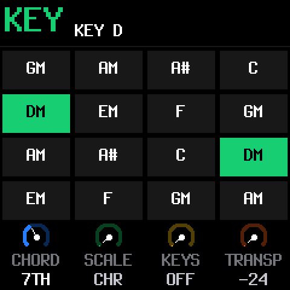
The key of the song, chords on one finger
Hold SEL and press a key: that is the key of the song for all three synths. The knobs pick a chord type (triad, 7th, 9th, sus4, power), one of 16 scales, how the keys follow the scale, and a transpose.
With a chord on, every white key plays a chord of the key, and the black keys change it as you hold them.
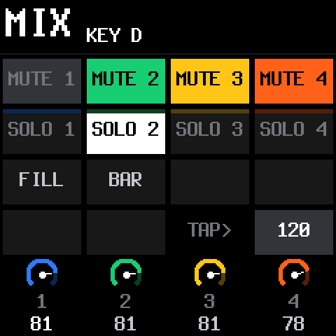
The mix in one hand
Hold GLO: keys 1–4 mute the tracks, 5–8 solo them, 9 plays a fill while you hold it, 10 fills the next bar, 16 taps the tempo. The four knobs are the levels of the four tracks.
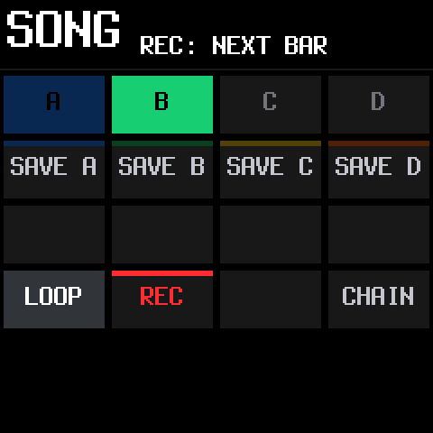
A song you play with your hands
Hold SAVE: keys 5–8 save the loop into sections A–D, keys 1–4 play them on the next bar. Tap several to chain them, and record the song as you perform it. The SONG screen edits it by hand afterwards, and SAVE → SECTION loads, saves or erases each section.
Twelve engines. 153 sounds. Every one level-matched.
From sliding 808s and acid basses to a real Steinway grand, Rhodes, organs, string machines, granular clouds, plucked guitars and sitar, all browsed by kind with the PRESETS knob.
- Shape every sound: envelopes and an LFO (both can follow the tempo), glide and voice modes (poly, mono, legato, unison), drive, an insert effect per track and a slicer.
- DX7 patches: the six-operator engine imports SysEx voices and whole cartridges from the web editor.
- Your own presets: 32 slots, four slots for your own samples, and up to 16 favourites at the top of the list.
- Sends: a stereo chorus, a tempo delay and a stereo reverb.
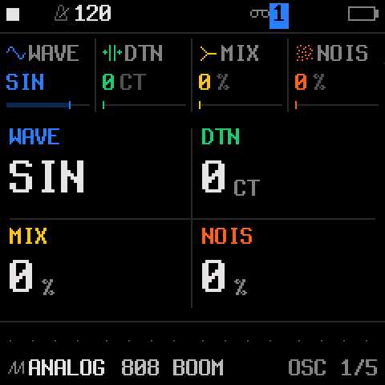
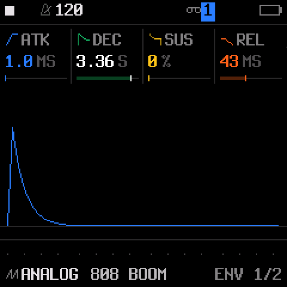
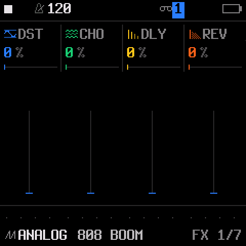
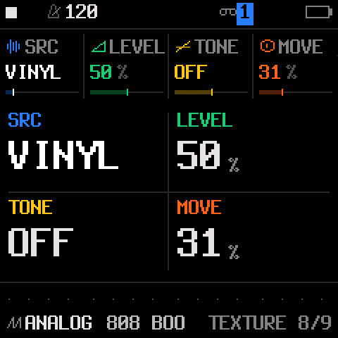
A drum machine on the white keys.
Sixteen sounds, kick to cowbell, one per white key. Hold OCT− for ghost notes and OCT+ for hard hits: every hit keeps its level and its ratchet.
- 37 kits: a sampled acoustic kit in five treatments and 32 synthesised kits: 808, 909, 606, trap, drill, boom bap, lo-fi, house, techno, jungle, amapiano, afrobeat, synthwave, chiptune and more.
- Your own kits: drop your samples on 16 pads in the editor, or design kits with the drum synth.
- Tune and decay every pad on the new SOUND page, on every kit, saved with each section.
- Grid, kit and sound pages on the FM-1 itself, and a 16-lane grid in the editor.
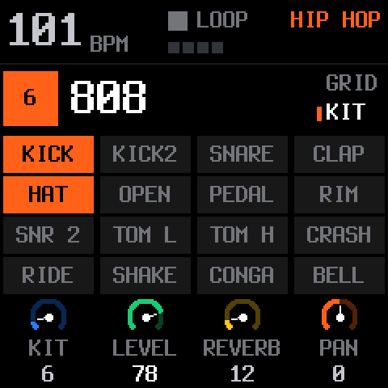
It records as you play.
While it plays, REC records at once and every pass is layered on top. Notes land where you heard them: the delay of the keys is taken back. On an empty project, just play: press REC on the one after your last bar and the loop's length sets the tempo.
64 steps per track
Each track with its own length and division, from 1/32 to two bars. Polymeters stay in phase on one sample-accurate clock: no drift at any tempo.
Locks, nudges, fills
Give a step its own value of any sound parameter, nudge it off the grid, or make it play only (or never) during a fill.
Chords and swing
Up to four notes a step with ties and slides, a level and ratchet per note, and MPC swing from straight to heavy.
Songs
Four sections A–D played live on the next bar, chained, and recorded as you perform them.
Undo, redo, autosave
Hold REC to clear a track, undo brings it back. Stop for a moment and your work is saved: SLOOP comes back exactly as you left it.
Your timing, or the grid
Record on the steps, or with QUANT off keep exactly when you played as each step's nudge. The PLAY light flashes on every beat; a click is one setting away and never recorded.
Every pixel tells you something.
White is what you are touching, red is recording, and every track has its colour, or your own: make a theme in the editor, a light one too. A bold, readable font on the FM-1's small screen, and twelve visualisers when you just want to watch the music.
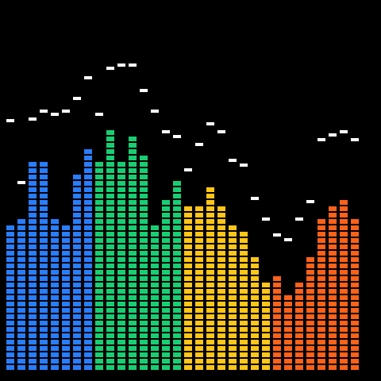
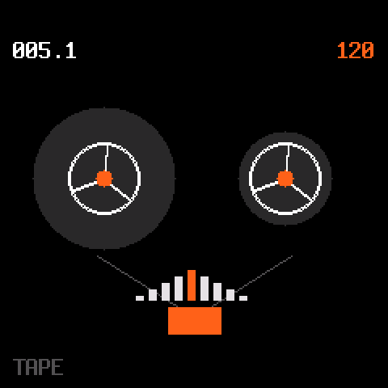
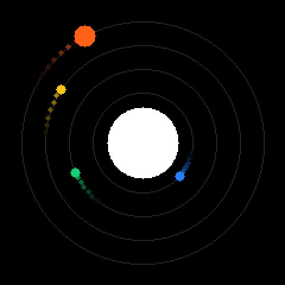
Every parameter, on a big screen.
Connect the FM-1 by USB and the editor follows it live: turn a knob on the FM-1 and the editor moves. Play a whole show from its LIVE page, edit every sound parameter, steps and kits, chop and loop your samples, import DX7 patches, design your screen colours, back up everything. It runs in Chrome or Edge, and installs as an app that works without internet, on Android too.
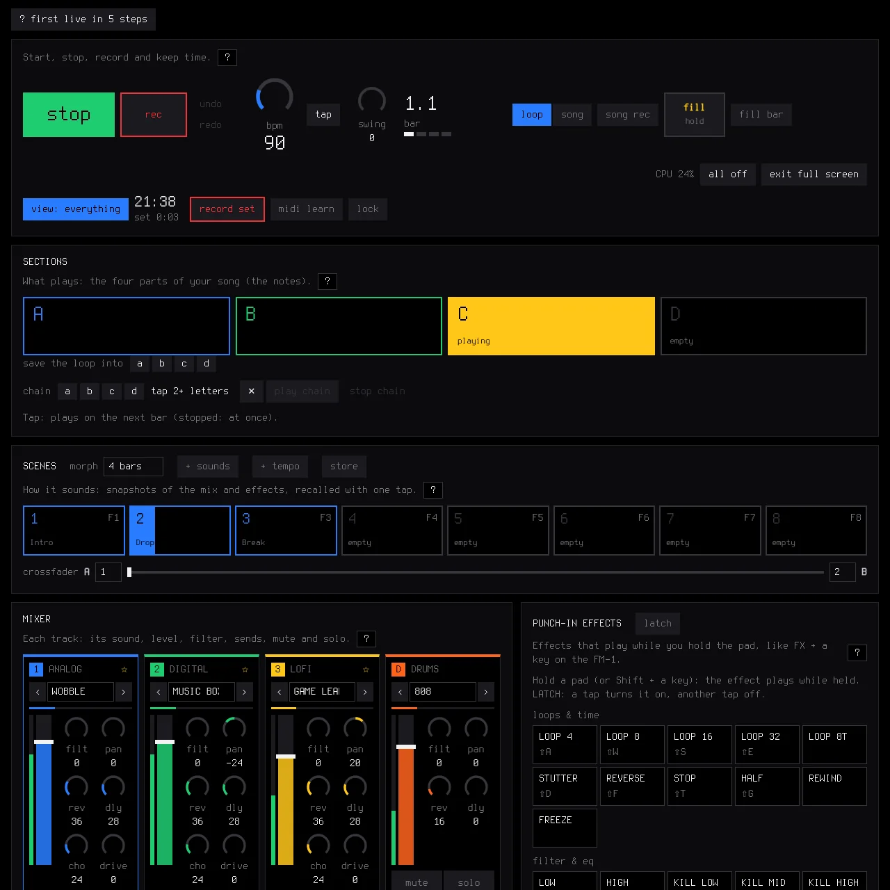
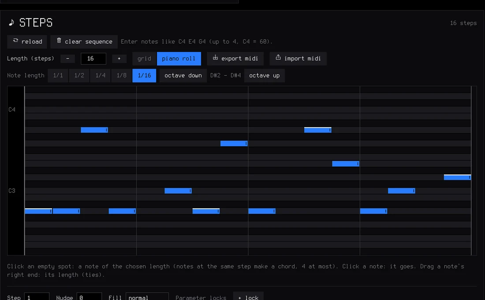
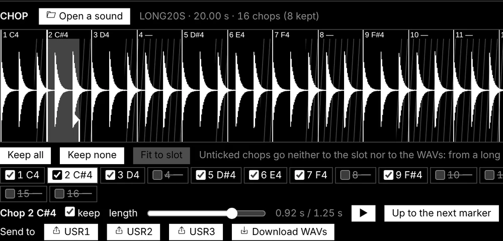
Your samples
Four slots of about 7 seconds, up to 16 files each, every one on its own key, played once or looping while held. Match levels with one click.
Drum kits and drum synth
Sixteen pads of your own sounds, or kits designed from scratch with the drum synth.
LIVE, from any screen
Transport, sections A–D on the next bar, a mixer, the 27 punch-in effects as pads, keys and drum pads, scenes that morph, MIDI learn, a playlist of your songs and the set recorded as a WAV, full screen: from a computer, a tablet or a phone.
Backup and restore
Your song, presets, samples, kits, patches, theme and settings in one file, onto this FM-1 or another. One file per song keeps as many songs as you like.
MIDI and USB audio, no driver.
USB MIDI
Class compliant, in and out. Each track on its own channel, the sequencer to MIDI out, CCs, sustain, pitch bend, Program Change and MIDI LEARN, the punch-in effects and even the buttons from your controller.
MIDI in on the jack
The 3.5 mm TRS input takes a keyboard or a pad controller through a TRS-to-DIN adapter, type A or B.
MIDI clock
Follow a master over USB or the jack: tempo, start, continue and stop. Or lead: the FM-1 sends its clock, start and stop on USB.
USB audio
The FM-1 is a USB audio input at 44.1 or 48 kHz, your choice for phones: record it in your DAW or on your phone over the same cable.
Lights
The buttons glow so their labels read on a black FM-1, the keys can light up, and the notes playing light their keys.
Safe updates
Every install is checked twice before it runs, an interrupted install finishes when you press Install again, and a USB rescue is always there.
Three steps, from your browser.
Nothing to download, nothing to compile. Your projects, presets, samples and settings are kept when you update.
Open the installer
In Chrome or Edge on a computer (Windows, macOS or Linux).
Plug in the FM-1
With a USB data cable, straight into the computer, no hub.
Press INSTALL
Allow MIDI access and wait for Done. The FM-1 restarts on the SLOOP logo.
Compatibility
| Device | M-VAVE FM-1. The official firmware can be put back at any time. |
|---|---|
| Installer and editor | Chrome or Edge on Windows, macOS or Linux (Web MIDI with SysEx). The editor app also runs on Android. |
| Cable | A USB data cable, plugged directly. |
| USB audio | Any computer or phone that takes a class-compliant USB audio input. |
| MIDI IN jack | 3.5 mm TRS, through a TRS-to-DIN MIDI adapter (type A or B). |
Changed your mind?
The installer page puts the official M-VAVE firmware back: save a backup with the editor, download FM-1 V15 from m-vave.com and select its file. Install SLOOP again whenever you like and restore your backup.
Custom firmware is installed at your own risk, without warranty. SLOOP keeps a USB rescue for that reason: hold OCT− while switching the FM-1 on and install again.
Questions people ask.
Is SLOOP really free?
Yes. SLOOP is free and open source under the GPL-3.0 licence. The source code, every release and the issue tracker are on GitHub.
Is SLOOP made by M-VAVE?
No. SLOOP is an independent community project. It is not affiliated with, endorsed by or supported by M-VAVE. It runs on the FM-1 you already own and changes only its software: the hardware, the keys and the knobs stay exactly as they are.
Can I go back to the official firmware?
Yes, at any time, from the same installer page (or with M-VAVE's own updater). Save a backup with the editor first, and restore it when you come back to SLOOP.
Can I keep several songs?
The FM-1 holds one song: four sections, A–D, and the order they play in. Save a backup with the editor for each song, and restore the one you want to play. Your loop in progress, presets and samples come with it.
Will I lose my work when I update SLOOP?
No. Your song and its sections, user presets, samples, kits and settings are kept across updates. A full backup from the editor is still a good habit before any update.
Which browser do I need?
Chrome or Edge on a computer, for the installer and the editor (they use Web MIDI). The editor also installs as an app that works without internet, on Android too.
Something does not work. Where do I report it?
Open an issue on GitHub with your SLOOP version, what you did and what happened. The complete guide has a troubleshooting section too.
Built in the open, with the community.
SLOOP is based on Felucca by Leo Kuroshita / Hügelton Instruments, and grows with every comment, test and pull request from people who play it.
| Tracks | 3 synth parts (8 voices shared) and drums (16 sounds) |
|---|---|
| Sequencer | 64 steps per track, own length and division, locks, nudges, fills, swing |
| Audio | 44.1 kHz fixed-point DSP on the FM-1's two cores, USB audio input at 44.1 or 48 kHz |
| Memory | Autosave, undo / redo, one song of 4 sections, 32 user presets, 16 favourites, full backup |
| Licence | GPL-3.0 |